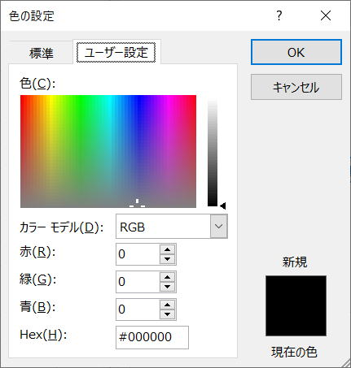

Colorプロパティの設定値一覧（カラー定数、XlRgbColor列挙）
塗りつぶし、文字色、等々の色指定は結構悩ましいものがあります、
Excel2007以降は、フルカラーがつかえるようになった為、色指定が悩ましくなりました。
Excelのカラーについて
24ビットカラー（16,777,216色）、トゥルーカラーとも呼ばれます。
RGBの1原色あたり8ビット（256階調）を割り当てています。
RGB関数を使うか、直接値を入れている事が多いと思います。
この操作を自動記録して、作成されたコードを使っている方も多いのではないでしょうか。

Sub Macro1()
'
' Macro1 Macro
'
'
Range("F4").Select
With Selection.Interior
.Pattern = xlSolid
.PatternColorIndex = xlAutomatic
.Color = 13288794
.TintAndShade = 0
.PatternTintAndShade = 0
End With
End Sub
このとき、RGB値の僅かな違いは、見た目では判断できません。
199と200との違いを、見た目でなかなか判断できるものではないでしょう。
色の僅かな違いは、好みの色・適当な色で構わないとは思います。
一般的に使われる代表色を使うと楽に配置できる場合もあります。
Excel VBAに用意されている、
色定数
色列挙
これらを比べられるように一覧にしてみました。
ColorIndex、カラー定数、XlRgbColor列挙、RGB値
| 色サンプル | 説明 | ColorIndex | カラー定数 | XlRgbColor列挙 | 値 | R | G | B | #16進 |
| 黒 | 1 | vbBlack | rgbBlack | 0 | 0 | 0 | 0 | #000000 | |
| ネイビー | 11 | rgbNavy | 8388608 | 0 | 0 | 128 | #000080 | ||
| ネイビーブルー | 11 | rgbNavyBlue | 8388608 | 0 | 0 | 128 | #000080 | ||
| 濃い青 | rgbDarkBlue | 9109504 | 0 | 0 | 139 | #00008B | |||
| 淡い青 | rgbMediumBlue | 13434880 | 0 | 0 | 205 | #0000CD | |||
| 青 | 5 | vbBlue | rgbBlue | 16711680 | 0 | 0 | 255 | #0000FF | |
| 濃い緑 | rgbDarkGreen | 25600 | 0 | 100 | 0 | #006400 | |||
| 緑 | 10 | rgbGreen | 32768 | 0 | 128 | 0 | #008000 | ||
| 青緑 | 14 | rgbTeal | 8421376 | 0 | 128 | 128 | #008080 | ||
| 濃いシアン | rgbDarkCyan | 9145088 | 0 | 139 | 139 | #008B8B | |||
| 明るい水色 | rgbLightCyan | 9145088 | 0 | 139 | 139 | #008B8B | |||
| 深いスカイブルー | rgbDeepSkyBlue | 16760576 | 0 | 191 | 255 | #00BFFF | |||
| 濃いターコイズ | rgbDarkTurquoise | 13749760 | 0 | 206 | 209 | #00CED1 | |||
| 淡いスプリンググリーン | rgbMediumSpringGreen | 10156544 | 0 | 250 | 154 | #00FA9A | |||
| 黄緑 | 4 | vbGreen | rgbLime | 65280 | 0 | 255 | 0 | #00FF00 | |
| スプリンググリーン | rgbSpringGreen | 8388352 | 0 | 255 | 127 | #00FF7F | |||
| 水色 | 8 | vbCyan | rgbAqua | 16776960 | 0 | 255 | 255 | #00FFFF | |
| ミッドナイトブルー | rgbMidnightBlue | 7346457 | 25 | 25 | 112 | #191970 | |||
| ドジャーブルー | rgbDodgerBlue | 16748574 | 30 | 144 | 255 | #1E90FF | |||
| 薄いシーグリーン | rgbLightSeaGreen | 11186720 | 32 | 178 | 170 | #20B2AA | |||
| フォレストグリーン | rgbForestGreen | 2263842 | 34 | 139 | 34 | #228B22 | |||
| シーグリーン | rgbSeaGreen | 5737262 | 46 | 139 | 87 | #2E8B57 | |||
| 濃いスレートグレー | rgbDarkSlateGray | 5197615 | 47 | 79 | 79 | #2F4F4F | |||
| ライムグリーン | rgbLimeGreen | 3329330 | 50 | 205 | 50 | #32CD32 | |||
| 淡いシーグリーン | rgbMediumSeaGreen | 7451452 | 60 | 179 | 113 | #3CB371 | |||
| ターコイズ | rgbTurquoise | 13688896 | 64 | 224 | 208 | #40E0D0 | |||
| ロイヤルブルー | rgbRoyalBlue | 14772545 | 65 | 105 | 225 | #4169E1 | |||
| スチールブルー | rgbSteelBlue | 11829830 | 70 | 130 | 180 | #4682B4 | |||
| 濃いスレートブルー | rgbDarkSlateBlue | 9125192 | 72 | 61 | 139 | #483D8B | |||
| 淡いターコイズ | rgbMediumTurquoise | 13422920 | 72 | 209 | 204 | #48D1CC | |||
| インディゴ | rgbIndigo | 8519755 | 75 | 0 | 130 | #4B0082 | |||
| 濃いオリーブグリーン | rgbDarkOliveGreen | 3107669 | 85 | 107 | 47 | #556B2F | |||
| カデットブルー | rgbCadetBlue | 10526303 | 95 | 158 | 160 | #5F9EA0 | |||
| コーンフラワーブルー | rgbCornflowerBlue | 15570276 | 100 | 149 | 237 | #6495ED | |||
| 淡いアクアマリン | rgbMediumAquamarine | 11206502 | 102 | 255 | 170 | #66FFAA | |||
| ディムグレー | rgbDimGray | 6908265 | 105 | 105 | 105 | #696969 | |||
| スレートブルー | rgbSlateBlue | 13458026 | 106 | 90 | 205 | #6A5ACD | |||
| オリーブドラブ | rgbOliveDrab | 2330219 | 107 | 142 | 35 | #6B8E23 | |||
| スレートグレー | rgbSlateGray | 9470064 | 112 | 128 | 144 | #708090 | |||
| 薄いスレートグレー | rgbLightSlateGray | 10061943 | 119 | 136 | 153 | #778899 | |||
| 淡いスレートブルー | rgbMediumSlateBlue | 15624315 | 123 | 104 | 238 | #7B68EE | |||
| 若草色 | rgbLawnGreen | 64636 | 124 | 252 | 0 | #7CFC00 | |||
| シャルトルーズ | rgbChartreuse | 65407 | 127 | 255 | 0 | #7FFF00 | |||
| アクアマリン | rgbAquamarine | 13959039 | 127 | 255 | 212 | #7FFFD4 | |||
| 栗色 | 9 | rgbMaroon | 128 | 128 | 0 | 0 | #800000 | ||
| 紫 | 13 | rgbPurple | 8388736 | 128 | 0 | 128 | #800080 | ||
| オリーブ | 12 | rgbOlive | 32896 | 128 | 128 | 0 | #808000 | ||
| 灰色 | 16 | rgbGray | 8421504 | 128 | 128 | 128 | #808080 | ||
| スカイブルー | rgbSkyBlue | 15453831 | 135 | 206 | 235 | #87CEEB | |||
| 薄いスカイブルー | rgbLightSkyBlue | 16436871 | 135 | 206 | 250 | #87CEFA | |||
| 青紫 | rgbBlueViolet | 14822282 | 138 | 43 | 226 | #8A2BE2 | |||
| 濃い赤 | rgbDarkRed | 139 | 139 | 0 | 0 | #8B0000 | |||
| 濃いマゼンタ | rgbDarkMagenta | 9109643 | 139 | 0 | 139 | #8B008B | |||
| 濃いシーグリーン | rgbDarkSeaGreen | 9419919 | 143 | 188 | 143 | #8FBC8F | |||
| 明るい緑 | rgbLightGreen | 9498256 | 144 | 238 | 144 | #90EE90 | |||
| 淡い紫 | rgbMediumPurple | 14381203 | 147 | 112 | 219 | #9370DB | |||
| 濃い紫 | rgbDarkViolet | 13828244 | 148 | 0 | 211 | #9400D3 | |||
| ペールグリーン | rgbPaleGreen | 10025880 | 152 | 251 | 152 | #98FB98 | |||
| 濃いオーキッド | rgbDarkOrchid | 13382297 | 153 | 50 | 204 | #9932CC | |||
| イエローグリーン | rgbYellowGreen | 3329434 | 154 | 205 | 50 | #9ACD32 | |||
| シェンナ | rgbSienna | 2970272 | 160 | 82 | 45 | #A0522D | |||
| 茶 | rgbBrown | 2763429 | 165 | 42 | 42 | #A52A2A | |||
| 濃い灰色 | rgbDarkGray | 11119017 | 169 | 169 | 169 | #A9A9A9 | |||
| 明るい青 | rgbLightBlue | 15128749 | 173 | 216 | 230 | #ADD8E6 | |||
| グリーンイエロー | rgbGreenYellow | 3145645 | 173 | 255 | 47 | #ADFF2F | |||
| ペールターコイズ | rgbPaleTurquoise | 15658671 | 175 | 238 | 238 | #AFEEEE | |||
| 薄いスチールブルー | rgbLightSteelBlue | 14599344 | 176 | 196 | 222 | #B0C4DE | |||
| パウダーブルー | rgbPowderBlue | 15130800 | 176 | 224 | 230 | #B0E0E6 | |||
| れんが色 | rgbFireBrick | 2237106 | 178 | 34 | 34 | #B22222 | |||
| 濃いゴールデンロッド | rgbDarkGoldenrod | 755384 | 184 | 134 | 11 | #B8860B | |||
| 淡いオーキッド | rgbMediumOrchid | 13850042 | 186 | 85 | 211 | #BA55D3 | |||
| ローズブラウン | rgbRosyBrown | 9408444 | 188 | 143 | 143 | #BC8F8F | |||
| 濃いカーキ | rgbDarkKhaki | 7059389 | 189 | 183 | 107 | #BDB76B | |||
| 銀色 | 15 | rgbSilver | 12632256 | 192 | 192 | 192 | #C0C0C0 | ||
| 淡いバイオレットレッド | rgbMediumVioletRed | 8721863 | 199 | 21 | 133 | #C71585 | |||
| インディアンレッド | rgbIndianRed | 6053069 | 205 | 92 | 92 | #CD5C5C | |||
| ペルー | rgbPeru | 4163021 | 205 | 133 | 63 | #CD853F | |||
| タン | rgbTan | 9221330 | 210 | 180 | 140 | #D2B48C | |||
| 薄い灰色 | rgbLightGray | 13882323 | 211 | 211 | 211 | #D3D3D3 | |||
| あざみ色 | rgbThistle | 14204888 | 216 | 191 | 216 | #D8BFD8 | |||
| オーキッド | rgbOrchid | 14053594 | 218 | 112 | 214 | #DA70D6 | |||
| ゴールデンロッド | rgbGoldenrod | 2139610 | 218 | 165 | 32 | #DAA520 | |||
| ペールバイオレットレッド | rgbPaleVioletRed | 9662683 | 219 | 112 | 147 | #DB7093 | |||
| 深紅 | rgbCrimson | 3937500 | 220 | 20 | 60 | #DC143C | |||
| ゲーンズボロ | rgbGainsboro | 14474460 | 220 | 220 | 220 | #DCDCDC | |||
| プラム | rgbPlum | 14524637 | 221 | 160 | 221 | #DDA0DD | |||
| バーリーウッド | rgbBurlyWood | 8894686 | 222 | 184 | 135 | #DEB887 | |||
| ラベンダー | rgbLavender | 16443110 | 230 | 230 | 250 | #E6E6FA | |||
| 濃いサーモンピンク | rgbDarkSalmon | 8034025 | 233 | 150 | 122 | #E9967A | |||
| 紫色 | rgbViolet | 15631086 | 238 | 130 | 238 | #EE82EE | |||
| ペールゴールデンロッド | rgbPaleGoldenrod | 7071982 | 238 | 232 | 107 | #EEE86B | |||
| 薄いさんご | rgbLightCoral | 8421616 | 240 | 128 | 128 | #F08080 | |||
| カーキ | rgbKhaki | 9234160 | 240 | 230 | 140 | #F0E68C | |||
| アリスブルー | rgbAliceBlue | 16775408 | 240 | 248 | 255 | #F0F8FF | |||
| ハニーデュー | rgbHoneydew | 15794160 | 240 | 255 | 240 | #F0FFF0 | |||
| 空色 | rgbAzure | 16777200 | 240 | 255 | 255 | #F0FFFF | |||
| サンディブラウン | rgbSandyBrown | 6333684 | 244 | 164 | 96 | #F4A460 | |||
| 小麦 | rgbWheat | 11788021 | 245 | 222 | 179 | #F5DEB3 | |||
| ベージュ | rgbBeige | 14480885 | 245 | 245 | 220 | #F5F5DC | |||
| ホワイトスモーク | rgbWhiteSmoke | 16119285 | 245 | 245 | 245 | #F5F5F5 | |||
| ミントクリーム | rgbMintCream | 16449525 | 245 | 255 | 250 | #F5FFFA | |||
| ゴーストホワイト | rgbGhostWhite | 16775416 | 248 | 248 | 255 | #F8F8FF | |||
| サーモンピンク | rgbSalmon | 7504122 | 250 | 128 | 114 | #FA8072 | |||
| アンティークホワイト | rgbAntiqueWhite | 14150650 | 250 | 235 | 215 | #FAEBD7 | |||
| リネン | rgbLinen | 15134970 | 250 | 240 | 230 | #FAF0E6 | |||
| 薄いゴールデンロッドイエロー | rgbLightGoldenrodYellow | 13826810 | 250 | 250 | 210 | #FAFAD2 | |||
| オールドレース | rgbOldLace | 15136253 | 253 | 245 | 230 | #FDF5E6 | |||
| 赤 | 3 | vbRed | rgbRed | 255 | 255 | 0 | 0 | #FF0000 | |
| 明るい紫 | 7 | vbMagenta | rgbFuchsia | 16711935 | 255 | 0 | 255 | #FF00FF | |
| 深いピンク | rgbDeepPink | 9639167 | 255 | 20 | 147 | #FF1493 | |||
| オレンジレッド | rgbOrangeRed | 17919 | 255 | 69 | 0 | #FF4500 | |||
| トマト | rgbTomato | 4678655 | 255 | 99 | 71 | #FF6347 | |||
| ホットピンク | rgbHotPink | 11823615 | 255 | 105 | 180 | #FF69B4 | |||
| さんご | rgbCoral | 5275647 | 255 | 127 | 80 | #FF7F50 | |||
| 濃いオレンジ | rgbDarkOrange | 36095 | 255 | 140 | 0 | #FF8C00 | |||
| 薄いサーモンピンク | rgbLightSalmon | 8036607 | 255 | 160 | 122 | #FFA07A | |||
| オレンジ | rgbOrange | 42495 | 255 | 165 | 0 | #FFA500 | |||
| 薄いピンク | rgbLightPink | 12695295 | 255 | 182 | 193 | #FFB6C1 | |||
| ピンク | rgbPink | 13353215 | 255 | 192 | 203 | #FFC0CB | |||
| ゴールド | rgbGold | 55295 | 255 | 215 | 0 | #FFD700 | |||
| ピーチパフ | rgbPeachPuff | 12180223 | 255 | 218 | 185 | #FFDAB9 | |||
| ナバホホワイト | rgbNavajoWhite | 11394815 | 255 | 222 | 173 | #FFDEAD | |||
| モカシン | rgbMoccasin | 11920639 | 255 | 228 | 181 | #FFE4B5 | |||
| ビスク | rgbBisque | 12903679 | 255 | 228 | 196 | #FFE4C4 | |||
| ミスティローズ | rgbMistyRose | 14804223 | 255 | 228 | 225 | #FFE4E1 | |||
| ブランシュアーモンド | rgbBlanchedAlmond | 13495295 | 255 | 235 | 205 | #FFEBCD | |||
| パパイヤホイップ | rgbPapayaWhip | 14020607 | 255 | 239 | 213 | #FFEFD5 | |||
| ラベンダーブラッシュ | rgbLavenderBlush | 16118015 | 255 | 240 | 245 | #FFF0F5 | |||
| シーシェル | rgbSeashell | 15660543 | 255 | 245 | 238 | #FFF5EE | |||
| コーンシルク | rgbCornsilk | 14481663 | 255 | 248 | 220 | #FFF8DC | |||
| レモンシフォン | rgbLemonChiffon | 13499135 | 255 | 250 | 205 | #FFFACD | |||
| フローラルホワイト | rgbFloralWhite | 15792895 | 255 | 250 | 240 | #FFFAF0 | |||
| スノー | rgbSnow | 16448255 | 255 | 250 | 250 | #FFFAFA | |||
| 黄 | 6 | vbYellow | rgbYellow | 65535 | 255 | 255 | 0 | #FFFF00 | |
| 明るい黄 | rgbLightYellow | 14745599 | 255 | 255 | 224 | #FFFFE0 | |||
| アイボリー | rgbIvory | 15794175 | 255 | 255 | 240 | #FFFFF0 | |||
| 白 | 2 | vbWhite | rgbWhite | 16777215 | 255 | 255 | 255 | #FFFFFF |
#16進は、WEBに表をアップする時などに使用できるように入れてみました。
このページのHTML作成でも使っているものです。
色名で探しやすくするために、意図的にそのようにしているものと思われます。
システム カラーの定数
| 定数 | 値 | 説明 |
| vbScrollBars | 0x80000000 | スクロール バーの色 |
| vbDesktop | 0x80000001 | デスクトップの色 |
| vbActiveTitleBar バー | 0x80000002 | アクティブ ウィンドウのタイトル バーの色 |
| vbInactiveTitleBar バー | 0x80000003 | 非アクティブ ウィンドウのタイトル バーの色 |
| vbMenuBar | 0x80000004 | メニューの背景色 |
| vbWindowBackground | 0x80000005 | ウィンドウの背景色 |
| vbWindowFrame | 0x80000006 | ウィンドウ枠の色 |
| vbMenuText | 0x80000007 | メニューの文字色 |
| vbWindowText | 0x80000008 | ウィンドウの文字色 |
| Vbタイトルバーテキスト | 0x80000009 | キャプション、サイズ ボックス、およびスクロール矢印の文字色 |
| vbActiveBorder | 0x8000000A | アクティブ ウィンドウの境界線の色 |
| vbInactiveBorder | 0x8000000B | 非アクティブ ウィンドウの境界線の色 |
| vbApplicationWorkspace | 0x8000000C | マルチドキュメント インターフェイス (MDI) アプリケーションの背景色 |
| vbHighlight 表示 | 0x8000000D | コントロールで選択されているアイテムの背景色 |
| vbHighlightText | 0x8000000E | コントロールで選択されているアイテムの文字色 |
| vbButtonFace | 0x8000000F | コマンド ボタンの表面の網掛けの色 |
| vbButtonShadow | 0x80000010 | コマンド ボタンの端の網掛けの色 |
| Vbグレーのテキスト | 0x80000011 | 単色表示の (無効な) 文字 |
| vbButtonText | 0x80000012 | プッシュ ボタンの文字色 |
| vbInactiveCaptionText | 0x80000013 | 非アクティブなキャプションの文字色 |
| vb3DHighlight | 0x80000014 | 3D 表示の強調表示色 |
| vb3DDKShadow | 0x80000015 | 3D 表示で最も濃い影に使用する色 |
| vb3DLight | 0x80000016 | 3D 表示で使用する?vb3DHighlight?の次に明るい色 |
| Vbinテキスト | 0x80000017 | ツール ヒントの文字色 |
| vbInfoBackground | 0x80000018 | ツール ヒントの背景色 |
環境により実際の色が変わってしまう為、VBAで使用する場合は色の違いに注意してください。
サイト内の色関連関連ページ
配色を使用したカラー設定を固定カラーに再設定
同じテーマ「マクロVBA技術解説」の記事
クリップボードを使わないセルのCopy
Rangeの使い方：最終行まで選択を例に
フルパスをディレクトリ、ファイル名、拡張子に分ける
Colorプロパティの設定値一覧（カラー定数、XlRgbColor列挙）
VBAを定型文で覚えよう
VBAこれだけは覚えておきたい必須基本例文10
エクセルVBAでのシート指定方法
文字列結合&でコンパイルエラーになる理由
手動計算時の注意点と再計算方法
VBAの用語について：ステートメントとは
オブジェクト変数とは何か
新着記事NEW ・・・新着記事一覧を見る
VBA100本ノック 100本目：WEBから100本ノックのリストを取得｜VBA練習問題（3月3日）
VBA100本ノック 99本目：自動席替え（行列と前後左右が全て違うように）｜VBA練習問題（3月2日）
VBA100本ノック 98本目：席替えルールが守られているか確認｜VBA練習問題（3月1日）
VBA100本ノック 97本目：Accessデータを取得（グループ集計）｜VBA練習問題（2月27日）
VBA100本ノック 96本目：Accessデータを取得（マスタ結合&抽出）｜VBA練習問題（2月26日）
VBA100本ノック 95本目：図形のテキストを検索するフォーム作成｜VBA練習問題（2月24日）
VBA100本ノック 94本目：表範囲からHTMLのtableタグを作成｜VBA練習問題（2月23日）
VBA100本ノック 93本目：複数ブックを連結して再分割｜VBA練習問題（2月22日）
VBA100本ノック 92本目：セルの色を16進で返す関数｜VBA練習問題（2月20日）
VBA100本ノック 91本目：時間計算（残業時間の月間合計）｜VBA練習問題（2月19日）
アクセスランキング ・・・ ランキング一覧を見る
1.最終行の取得（End,Rows.Count）｜VBA入門
2.RangeとCellsの使い方｜VBA入門
3.変数宣言のDimとデータ型｜VBA入門
4.マクロって何？VBAって何？｜VBA入門
5.Range以外の指定方法（Cells,Rows,Columns）｜VBA入門
6.セルのコピー&値の貼り付け（PasteSpecial）｜VBA入門
7.繰り返し処理（For Next)｜VBA入門
8.セルに文字を入れるとは（Range,Value）｜VBA入門
9.マクロはどこに書くの（VBEの起動）｜VBA入門
10.とにかく書いてみよう（Sub,End Sub）｜VBA入門
- ホーム
- マクロVBA応用編
- マクロVBA技術解説
- Colorプロパティの設定値一覧（カラー定数、XlRgbColor列挙）
このサイトがお役に立ちましたら「シェア」「Bookmark」をお願いいたします。
記述には細心の注意をしたつもりですが、
間違いやご指摘がありましたら、「お問い合わせ」からお知らせいただけると幸いです。
掲載のVBAコードは動作を保証するものではなく、あくまでVBA学習のサンプルとして掲載しています。
掲載のVBAコードは自己責任でご使用ください。万一データ破損等の損害が発生しても責任は負いません。